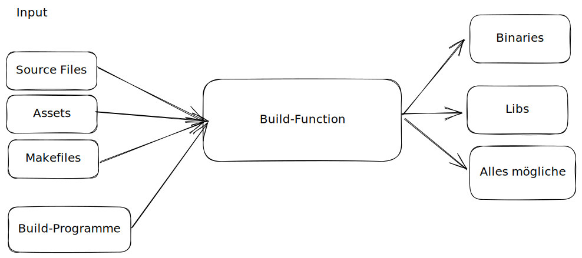

NixOS Intro
$ whomai
- Felix Ulonska (Jabbi) er/ihm
- Aktuell: Computer Science Master Bonn
- $dev @ devsaur
- verwende NixOS seit etwa 1 Jahr
Naming is easy

Wie man bisher Packages macht


In Nix

- Build-Funktion ist determinitisch™:
- Internetverbindung deaktiviert
- Die Umgebungsvariablen $HOME und $PATH sind auf bestimmte Werte festgelegt
- Der Build-Ornder ist ein temporäres Verzeichnis.
- Der Zeitstempel für den Build-Ausgabepfad wird auf 1-1-1970 zurückgesetzt.
- Stellt reproduzierbaren Output sicher
Nix Store
- in
/nix/storeliegen alle Paket und Build-Artifakte /nix/store/38in4n9cz6alhyc0hbb7g2yfsg7cgf8q-firefox-107.0/nix/storeist read-only (immuntabile)- Da Pakete deterministisch => Zwischen Hosts kopierbar
- Falls Paket auf andere Pakete aufbaut mit kopiert werden
Enough Nix Lang to be dangorous
-
Lazy
let a = abort "will never happen"; b = "hello"; c = "world"; in b + c -
Pure:
Es gibt keine Seiteneffekt: Output einer Funktion hängt nur vom Input ab - Functional
- Syntax: JSONs und Haskell gemeinsames Kind
let a = rec {
myString = "Hallo Warpzone";
myNumber = 12;
myPath = ./cooleConfig; # Relativer Pfad
githubLink = github:NixOS/nixpkgs;
myList = [ 1 myPath ./einAndereDatei "Anderes Element"];
}
in a.myList[ 1 2 3 4 5 ]Funktionen
Simples Lambda
let
inc = x: x + 1;
in (inc (inc 1))
3Weiteres Lambda
let
sum = x: y: x + y;
in (sum 1 3)
4Named Funktionen
let sum = { x, y }: x + y;
in sum {x = 12; y = 32;}44let sum = { x, y ? 1, ... }: x + y;
in sum { x = 32; z = 12;}33Wir schreiben unser erster Paket
package main // helloWorld.go
import "fmt"
func main() { fmt.Println("Hallo") }# default.nix
with import <nixpkgs> {};
stdenv.mkDerivation {
name = "helloWorld Golang";
src = ./.;
buildInputs = [ pkgs.go ];
buildPhase = ''
go build helloWorld.go - helloWorld
'';
installPhase = ''
mkdir -p $out/bin
cp helloWorld $out/bin/helloWorld
'';
}nix-build . Was ist eigentlich diese Nixpkgs?
- Quasi STD-Lib von NixOs. Auch in Nix-Lang
- Mono-Repo, die alles enthält:
- Pakete
- Services
- Funktionen zum Bauen von Paketen
- Funktionen zum Bauen des Betriebssystems
- mkDerivation Funktion
- Das GO-Paket
- Packages Suche
Wieso ist dann nicht langsam?
- Caching!
- Wir kennen den Hash, können also alles cachen
- Dicker Binary Cache
Power von Nix Packagemanager
- Batteries included: Bringt alle Libraries, wie libc, selber mit
- Unabhängig von NixOS
- Funktioniert auf fast allen Linux-Distros und Mac
$ sh <(curl -L https://nixos.org/nix/install) --daemonnix-Shell
$ nix-shell -p firefox
$ firefoxfirefox. Fügt Firefox in $PATH hinzu.
nix-env
Tool zum manipulieren von Nix Env$ nix-env -i firefox
$ firefoxfirefox.
Jede Veränderung erzeugt eine neue Generation: Man kann zu jeder vorherigen zurück springen
NixOS
- Können wir nicht auch genauso Betriebssystem verwalten?
- System wäre determinitisch, zurück setzbar, etc.
- JA!
- Ein Paket: Unser System representiert
- In dem Paket
/etc,/bin,/lib, Kernel, Systemd Units, sym-links zu allen anderen Pakete, die bei boot gemounted werden
- Funktion, die ein Set übergeben bekommt
- Funktion baut daraus das Systempaket
Unsere erste NixOS-Configuration
Ein System besteht aus mehrern Modulen. Alle Module werde von dem Build-System aufgerufen. Ein Modul ist eine Funktion. Nix baut unser System entsprechend des Ergebnis der Funktion{ pkgs, ... }: {
imports = [
./hardware-configuration.nix
];
boot.loader.systemd-boot.enable = true; # (for UEFI systems only)
services.sshd.enable = true;
}- Funktionen geben ein Set zurück, dass die Informationen über das System enthält.